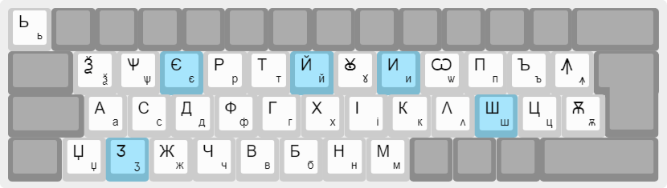
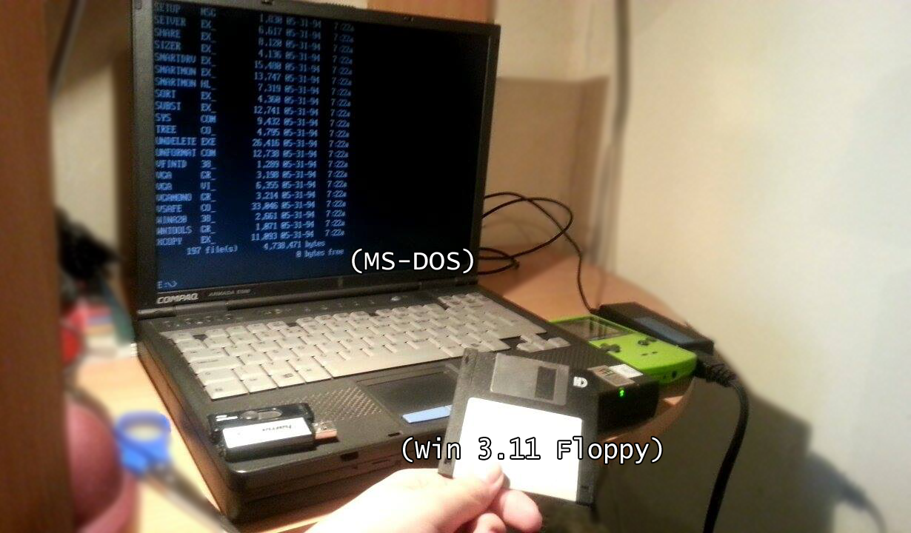

Welcome to ye oldenblogges – a mostly★ true to original collection of (perhaps) all of my blog entries prior to the creation of the current version of this website.
Advice for those wishing to read up on my lore: Steel yourselves in preparation for the very potent second-hand embarrassment that is to come.
Jump to:
★ The styling and some of the formatting has been minimally adjusted for the sake of consistency, but the contents themselves remain entirely unaltered.
(Still on the main page for now!)
Just remembered I have a blog, hi!
So, I decided I'd make a Discord bot a few months ago. And I did, by throwing away the official discord.js guide because it was using slash commands, which I didn't want. And all was well and good.
But then, utterly clueless, I stumbled upon a different bot's slash commands by accident and took a gander at the arguments. It was beautiful, so I thought you know what? I'm going to completely rewrite my bot to use slash commands. Unbeknownst to me, the nightmare had already begun to unfold.
Let's talk about interactions. Not the real, human-to-human kind, those are good and boring. I'm of course talking about Discord interactions. You can set up an event listener in your app that does something whenever it receives one, and you can send one through some Discord interfaces like commands or buttons. Of course, you must register your commands or send a message with buttons on it first. But once you figure that out it's all smooth sailing from there... or so I thought.
The cool thing about all of this is that, yes, arguments are really fucking cool. You can make required or optional ones, you can give the user a list of pre-written values or let them type whatever, you can put attachments on them like images and videos and whatnot, the list goes on! And it appears as though Discord are really happy with this system and love to encourage everyone to switch to it over plain text commands (i.e. ?help, ;;join, s!stats etc.) but there's a catch. No, there are a ton of catches.
First of all, arguments. Yes, very cool and good. You can only have up to 25 but that should be more than enough. What isn't cool and good, however, is that when it comes to commands themselves, you can only have 50 of them. That is not a lot. If you've ever made a general-purpose or all-in-one bot you should know that commands pile up fast. From what I've seen there aren't any plans for increasing the limit any time soon, so just be aware of that, I guess. And you can also only have up to like 50 pre-determined argument values, have fun with your translation command.
Another cool thing is sub-commands. You can kinda use these like putting a space in your command name. Like you could have a /ping for the bot and /ping minecraft <address>. The uncool thing is that you can only have one level of sub-commands and a maximum of 10 for every base command... Yeah, what I'm trying to say is that these limits are kinda ridiculous.
But then again, attachments! Sending attachments to a bot has never been easier! Except it has, because it literally doesn't fucking work with slash commands. Not in DiscordJS at least. There's a method for adding attachment arguments to your command, but the only thing you get from the actual command interaction is the attachment parameter with its name, a type that's apparently undefined and a "value" that you don't even know what it represents. Maybe it's the attachment ID, but you'll need way more than that to figure out its URL. Good luck looking up literally anything about slash command attachments when it comes to DiscordJS.
I could go on and on and on about why DiscordJS sucks ass, so allow me to summarize everything as "fuck the devs." They keep changing and deprecating everything all the time and I don't understand why. Man, just plan ahead or something. If I were to try and guess, MessageEmbed.setTitle() or MessageEmbed.setDescription() are going to, like, require Object parameters rather than Strings in the future.
And as a final thing, button interactions are also ass. You have 3 entire seconds to respond to them, otherwise they fail. So like, wanna make a refresh button for your embed? Have fun.
Tying in with the above rant, I've decided to move the dangeru command from that bot to it's own /u/ bot. I'm still working on it but it uses the danger/u/ API extensively so I made my own local module to deal with that. It also scrapes the website itself for some additional data that isn't included in the API. But then I thought "Hey, this seems like something someone should have already made. Shit." and proceeded to look up similar packages on npmjs.com and there was, surprisingly enough, nothing. There's an official JavaScript API wrapper on the danger/u/ GitHub, but it's old and ugly and for web browsers. It even uses vars 🤢. Anyway, point is that Node doesn't have fetch so I win.
But then I thought, why don't I try being a good samaritan for once and upload my module to npm so everyone can use the /u/ API easily. I mean, there aren't too many people that would want to, but someone might! So I npm published it and everything worked out perfectly. I even had JSdoc comments on everything for that sweet, sweet IntelliSense. Life was good.
It was good. Until I tried downloading and using it, that is. Because for some reason it now had this weird ass warning about some declaration file not being found. Looking it up, I found out that it's some TypeScript thing, leaving me absolutely befuzzled since my entire module consists of a single index.js file that had no traces of TypeScript anywhere in it.
Anyway, some googling and suffering later, I decided to just say "fuck it" and write that damn declaration file or whatever and be done with it. For some reason that fixed everything so I'm happy. Have an asynchronous dangeru-js and check out the commit history for some funnies.
I got it to work. For some reason I'd never thought of simply trying to reboot. Man. Anyway, кам аста-й тoт чє-ам авѹт дє ꙟмпъртъшит, нє вєдєм дата виитoарє кынд сє стрикъ чєва.
Things certainly have been happening for a while, and people are talking about them, so I figured that I might as well give my two cents, at least they're currently worth more than a ruble. But I'll start off with a lighter topic that everyone here loves: me! That's right, here's your monthly to bi-yearly update. Not sure if that's a real word.
Recently, my Windows 10 HDD had been chugging what I feared might its last breaths. So yes, I had finally built up enough willpower and decided that I'd reinstall the OS. I went out, bought an SSD, did the deed, and lo and behold! Random BSODs whenever something tries to write to the drive.
I've spent countless hours debugging without any crash logs to be found anywhere, and the only conclusion I've managed to come to is that it's gotta be the motherboard. It's like two decades old, so yeah... I tried using my dad's SSD instead of mine but the same random BSODs were happening, so I don't really know what else it could be. Anyway, I'll have to go buy a new MB I guess, let's see how that goes.
Meanwhile, I've been stuck on Linux for the past two weeks or so. I decided to go with Arch because it's light, the least pain in the ass to install, and Ubuntu Server refused to let me press the Alt key. I'm not even gonna go there. Anyway, for some reason or other the nVidia drivers for Arch annihilate the X server, so I can't even play Minecraft right now. In fact, anything nVidia-related that I install annihilates the X server, even just the utils or settings. I don't want to spend a day figuring out how to fix it, so I'll just wait everything out until I get the new MB and I can go back to comfiness. I can't stream either without the drivers and even VSCode sucks, I'm using the OSS variant right now and neither this nor the normal one would let me log in. Fun.
In other news, I've been thinking about trying Matrix, Mastodon and/or Pleroma. As far as I know only techy schizos and furries, which for some reason happen to overlap quite a lot, use these platforms regularly, so I'm thinking I could potentially have a bunch of fun interactions on them. Like some sort of VRChat but without the VR, or game. Yes, I'm this bored.
Now on to the meat of this post. Ukraine is exploding, Europe is kinda, more-or-less freaking out, Twitter users are being the most themselves they can be, as we all sit by and watch the spectacle unfold, wondering whether the Ghost of Kyiv's existence is at all plausible (nah). As morbid as it might sound, I find the entire situation rather amusing. I mean, isn't this the most 2020s war? It goes to show you how hard people are struggling to comprehend what's actually going on because no one's used to this. Some are sending thoughts and prayers, others willingly ignoring it, others memeing about it, and others are somehow making it all about themselves. It gets me to wonder how many of them actually understand or care and don't see it as just another trendy talk-of-the-town story.
Some would say, what about the other wars that have been going on for much longer? Why doesn't anyone care about those, huh? Maybe if they weren't trying to be a one-upping holy bastard so hard, they'd understand that we do, but there's still nothing that the general population can do. And what, are you trying to say that the Ukraine war isn't worth any fuss because there are other wars going on? I don't get these people, it's like the all lives matter thing all over again.
Either way, while it's basically nothing, my heart still goes out to both the Ukrainians that have to stay and fight or flee to survive, and all the innocent Russian citizens who everyone's trying to cut off from the rest of the world right now. It's all very much a nightmare, the only thing we can do is hope that it doesn't escalate further.
For all anyone knows, Moldova could be next and then us. But as much as Moldova might be praying right now, we're part of NATO so I don't know if Putin would go that far. He doesn't really have anything to gain from us other than massive GDP debt.
That's about it for now, happy Mărțișor! (please imagine that the cat is orange and this is an epic Neocities reference)
I've been fascinated with Romanian Cyrillic for a while now, a writing system that was somehow used for a mostly romantic language. No one ever seems to talk about it and information is scarce, even in Romanian, but I thought it would be pretty cool if I had a way to type with it whenever I pleased. Like, whenever some random Russian adds me on Discord I could scare him away with my forbidden letters.
I first had this idea months ago, but I thought I'd have to write my own IME or some shit like that so I instantly gave up. Some time later, however, I realized that there's this thing called Microsoft Keyboard Layout Creator from a billion years ago that somehow still works, so I got it and started mapping keys. Small problem though: I had no fucking idea what I was doing. I still don't know how people come up with shit like QWERTY or DVORAK, but I remembered that there's a mnemonic Russian layout that attemps to map Russian Cyrillic to QWERTY as best as it can. Maybe I could do the same thing. And so, after much trial and error, here's what I've come up with:

The key combos are as follows:
It attempts to preserve the regular Romanian typing flow as much as possible so you don't have to think about what key combos to do and whatnot. However, the writing system itself is full of stupid shit that I can't do much about. For example, И, Й, І and Ь are ALL "i" (ee) sounds, some ever so slightly different from each other, and some solely because of stupid-ass ortography rules.
You may also be wondering to yourself "Why Ӡ and Г?" and the answer to that question is ain't no one gonna use the shitty \ key for Џ. Ѯ and Ѱ might also be questionable choices, but there's no Q or W in Romanian, so putting something else there would feel weird. Also Ѱ kinda looks like W so yeah.
I initially wanted to include every single letter in the Wikipedia table linked above, but I've decided against key combo pollution. Now, if you're ever gonna try making your own layout, you're likely going to rip your hair out when it comes to dead keys, so let me teach you.
These are basically keys that produce either their assigned letter or a different one via key combinations. So for example, say I had the letter Ш assigned to the ; key, and this key was also marked as a "dead key." It has its dead key "Base" set to Т and the "Composite" to Щ. Now, when I press this key nothing will happen because it's waiting for a potential combination. If I now press the T key, the Щ character will appear. If I press any other key or Space then Ш followed by that key's assigned character will appear instead (even if it's another dead key). Yes, it's a pretty stupid system, but it's all we have other than IMEs in the year of our lord 2022.
In the end, after all is said and done, I validated the layout, got a pretty chunky log file, installed it, and it didn't show up in the language bar. I have no idea how to fix that, I think it might have something to do with it being based on the standard ROU layout and that not having cyrillic shit in it. I'm too burnt out to scour the web for ancient sites that may or may not have a solution though, so I will admit my defeat here. If anyone ever finds this post and wants to try bring the Romanian cyrillic keyboard into existence once and for all, I'm passing you the torch. It's all so tiring.
TL;DR: Did you know that the word "jail" used to be spelled "gaol"? That's fucked up. Some ghoti shit right there. Also, dresses are kinda cool and I might have a hiccup fetish now.
I've been replaying the Alice games these past few days. And yes, by replaying I mean watching two long-plays on YouTube, 17 hours total. And yes, by 17 hours I mean I made a userscript for controlling the video player's playbackRate with the - and = keys and then constantly altered it throughout the video because I am unable to comprehend speech at 3.25x speed. So I guess you could say that I did somewhat play them after all.
This is probably the first candidate for unexplicable things I did this year. I just kinda, suddenly remembered that Alice: Madness Returns was a real video game that did in fact exist at a certain point in time, and that I was gonna watch PewDiePie play it way back when I was a wee ol' chap. However, unbeknownst to me back then, was that the first thing I'd see upon clicking the accursed video was kids with stitched-up faces. That shit ended up scaring the absolute crap out of me, so I immediately closed the video, blocking the entire game from my mind in the process.
Well anyway, I rediscovered it a few days ago and it's fucking cool as balls and now I'm a bit obsessed with it. It's like Psychonauts if Milla's burning kids room was made into its own entire game. While the first game—American McGee's Alice—is a strong meh leaning towards ugh, Madness Returns is simply brimming with STYLE and CHARM and I think Alice Liddell might just be the first woman to combine being British with being attractive.
Go bloody figure!
I think Madness Returns is quite popular. I mean, you've probably heard about it at some point, right? But nobody seems to remember this series at all. Maybe my perspective is warped because I subconsciously expect everyone to have had similar experiences, or maybe it really is in this weird-ass video game limbo of sorts.
Anyway, go see if it's your thing NOW!!! You don't even have to sit through the first game, just watch the beginning and ending cutscenes if you're interested in the lore and then move on to Madness Returns. There are also some weird-ass shorts on YouTube with fucking Jules Verne in one of them?? Idfk what that's all about but his baguette accent is fucking terrible and Alice's 3D model looks like it was made in MikuMikuDance by your average deviantArt user. I dare say those videos have liminal vibes to them. Weird shit.
Also, it seems that McGee really wants to make a new Alice game but EA is a big, scary corporation so he wants to approach them with a boulder of a script and concept art and all sorts of shit to get approval. Yes, Alice: Asylum is still only a concept in 2022, and I wouldn't put it past EA to just go "lol no."
My pain is unimaginable, immeasurable.
Watching Madness Returns in 2022 made me realize just how different things are compared to back then. This game is an entire experience with beautiful visuals and quirky mechanics. It's tons of fun and even has some replay value, you can clearly see the passion that's gone into making it. And this is EA we're talking about. That EA. In contrast, AAA titles nowadays singleplayer or not come rushed, unfinished, bug-ridden, and with a most strange fixation on hyperrealism.
I might be growing into the grumpy adult that I always told myself I'd never become, but I just can't help but feel disappointed. We could have had many near-masterpieces by now, but they're all flawed to the core because of how rushed they had to be. I don't even know who's to blame here. My advice to developers and companies, of which neither is gonna see or care about this, is to never announce a release date until they think that their game is almost finished, because it almost never actually is. I get that hype is important, but man, please give yourselves some time.
What the hell is up with all these creepy-ass reimagined Alice in Wonderland games?? Like there was also that Alice is Dead shit on Newgrounds, surely you remember that one. Was the book weird or something? I've only ever seen the movie so this shit makes little to no sense to me.
Ok, look, I was gonna release this on new year's, it's just that there was a... tiny amount of itty bitty bugs that I had failed to anticipate. But theoretically speaking, everything should be more or less functional now.
Sigh... You know, I've been hearing a lot of good things about Vue... but I'm still holding strong and not learning a reactive framework or whatever they're called. I am a JavaScript purist, not because I like it or anything but because I can't afford to make my code any slower than it already is.
Anyway, there are a few easter eggs scattered around here and there so see if you can find them without cheating or something. See ya.
Welcome back to the least interesting part of the site, where I record all my woes and whatnot! You could say that this is where the magic happens. Here's to hoping that the complaining will span various other topics besides entropy from here on out! Like language! Oh and by the way, the reader is advised not to ponder the woe to whatnot ratio too much.
Right then, I couldn't fucking bear thinking about the previous design anymore. It was a nice idea, executed in a much too horrible manner. This one, however, although not perfect, should be MUCH easier to maintain. I will finally be able to sleep at night, knowing that whenever someone stumbles upon my site they will have something pretty to look at. I've gone through a lot of potential candidates for /10/ and they all started looking like trash a week later, but man, just look at this one: minimalistic, pastel, and responsive!? I can hardly believe that this is my crafting.
What I'm not so happy with right now would be the URL parameter system, but I can't think of a better way to distinguish between pages. These are the perils of single-page websites, I guess. Also some of the JS could also be better, but it's leagues above how I used to write it, so I guess it's fine for now.
Something I want to add next is themes and some kind of pagination and search system for the blog and dream diary. I have a few ideas so I'm hoping it won't be too much of a headache, but I know all too well how my ideas tend go.
Oh, and I pimped up the 404 page a little. Gone is the if-else monkey code ripped from the depths of hell. I'm not entirely sure how seizures work, but I think the CRT flickering effect is subtle enough not to induce one. Please let me know if it kills you though.
If you're planning on keeping up with this thing, I suggest that you get to know my much too humble self a little better first.
I'm your average guy living in smack-dab nowhere, god-awful post-communist country, Europe. Wages are low, prices high, our government's debt is going to the moon! Yadda yadda yadda, you should know the spiel by now. I'll spare you all the juicy details this time.
I used to be really into music theory and composing stuff, but then my audio interface decided to kick the bucket, leaving me stranded with no hobby, because everything is in a continuous state of breaking down around me. Ah, ruthless entropy. *elegantly sips pilk and smashes glass against forehead*
Here's a fun fact: My English accent is naturally british because that's how I was forced to speak at school. However, I get the feeling that it's way too heavy and unintelligible for most people, so I always use a pitiable anglo-american accent when speaking to others. But is that any better, you ask? It probably depends on whether or not the concept of an "anglo-american accent" makes any sense to you.
And hey, despite everything, I'm no "doomer" or whatever the trendy word for "dispirited male" happens to be right now, as I've discovered some would believe me to be. I have a lovely Reimu fumo by my side, I'm unstoppable.
I have no idea why, but I decided to learn Japanese a few years ago, an experience that has since opened many new doors of abhorrence for me. If you're the type of person to write random anime words, kana gibberish, romaji paragraphs, or larp as a native with your either broken or stiffy grammar on social media, then not only are you likely from Spain or SEA, but you should also gun it for dear life if our paths ever happen to cross.
As for my current level, it's somewhere around N3 or so I'd guess. I'm only saying this because the N5 and N4 tests on the JLPT website seemed really easy. I also haven't really tried communicating with any natives as of yet, because I have a weird mental stop that I can't seem to get rid of for whatever reason. More than that, however, is the fact that coming across natives here in the boonies of Europe is not the easiest thing to do.
You see, the thing is that my vocabulary is extemly varied. I know my fair share of slang and field-specific jargon, but you wouldn't think so because of how lacking my general vocab is. It's really quite the phenomenon. I'm also not as good at generating language as I am at understanding it, but here, I'll demo myself in the next paragraph.
…とは言ったんだけど何書こっか全然知らん。これを書いてる今の日はまだ1/1なのでとりあえず読者よ、良いお年をな！でもいやぁ…全然なんも出ねえなぁ。なんかハズい………ま、これだって大体は分かるんだよね？ただ、一つのこと覚えとけ、バンドリというのは世界一、最高のシリーズだぜ。そして氷川紗夜はオイラの妻なんだ。だから手など出すなよ。……んじゃ、いろいろ詰め込んでみて何やら乱雑というか、やりすぎた感じが伝えられちゃった可能性もあるけど、現在こーゆーレベルでございます。
Nowadays, I mostly use my accumulated knowledge to read spicy ero-doujinshi and shitpost on a Discord server full of schizos from all around the world. Good times!
Happy new year y'all! Let's make it a great one. Surely this isn't an unforeseeably nightmarish omen!
Well, not exactly, but that's an eye-catching title, right? This website has been updated to version 10, so every new addition to the blog or dream diary will be here instead: /10/. I don't think anyone has this shit bookmarked or anything, but just in case you do, please jump ship immediately, /9/ fucking sucks. There are also themes on /10/ like I said I'd implement them all those years ago so yeah, check it out.
I came back from the dead only to ask, have y'all heard about something called "soup 0.9"? If not, it's a weird ass game with similar aesthetics to LSD Dream Emulator. It's way simpler though, you just walk your way through 25 cubic areas and then you're done. The OST was used in some "weirdcore" videos, which is how I found out about it in the first place. And for some reason, when I saw it my mind instantly went "Yooo, I could make one of those video essays about this. It's a small game, I'm sure I could drag it out and make it into a video. How hard could it be?"
Enter Sony Vegas® "Pro" 17. Vegas is by far the biggest piece of shit video editing software I've ever had to suffer through. Garbage UI, dozens of bugs, awful performance, so on and so forth. Has it really been through 17 versions? It sure as hell doesn't look like it. They only added ONE shitty dark theme a few versions back and it still lags like nothing else. Virtually nothing changed. If anything it feels like it got worse. This is supposed to be lighter than, say, Adobe Premiere. It lacks tons of its features, so it makes sense right? Then why does my video preview, on "Draft (Half)" quality (on a scale from 0 to 10, that's 1.2) still have so many lag spikes. And it only happens when there's a transition like a fade-in or fade-out or some new effect. Bruh, just render that small part I'm currently working on and play it back. It would be way more efficient.
Nevertheless, I was dedicated to the creation of this video, so I put up with Vegas' garbage performace and hourly crashes (that I'm willing to bet are scheduled) and the first problem to tackle was format. I had a chungus script ready and managed to track down the dude, but I had nothing else. Then it hit me, I don't really need anything else. I'll just make it a slideshow. I have S_Shake after all, the wobble should keep the viewer interested enough.
But what about the background? Another genius idea struck, but a painful one this time. Ideally, I wanted something abstract, but simple, so I decided I'd code a bunch of randomly generated polygons a.k.a. triangles. But how the fuck do I do that? I then remembered some tech channel from a while ago and how it was shilling p5js, so I looked into that. Processing (the language) works by redrawing an image on a canvas on every other frame, so it blew my mind that the amount of shit being drawn barely impacts performance.
So after spending a few minutes looking through examples, I did my best to write my polygon generator. I picked my go-to binary color scheme and resorted to fucking with the alpha channel if I needed more colors. I spent some more hours making slight improvements to both the code and the looks, and now I have this thing that I'm quite proud of tbh. May not be much to you, but it sure is to me.
My mic comes with seven billion decibels of noise? I'll just use Krisp and pray that the two hour trial is enough. Background music? I could use the OST, but everything's only a few seconds long. Whatever, I'll just use some of my unreleased garbage. I'll also add a progress bar up top to flex my incredible keyframe skills. And everything will have a green border to slightly blend it with the background. Ah, the illusion of perfection.
The content of the video is pretty standard. I talk about the game, look over the code, talk with the dude who made it, blah blah. My voice also sounds monotonous and tired as fuck, because I was. I recorded that shit at like 2AM. But I still felt like it wasn't enough. I wanted more. I want this to be the definitive SOUP 0.9 video. So I kept descending. I downloaded HSP (the language it was made in, Hot Soup Processor, which is awful) and used their shitty code editor to mod. I deciphered what functions do what, and where they're called. I went insane.
But in the end, I arose victorious. I clipped through the walls to demonstrate the random spawn position of a rat, and even went as far as to add an unused Day 6 back into the game (there's also a Day 7, but each day needs 5 rooms and I have no imagination). At first I was gonna drop my favorite corocot image in the middle, but I ultimately decided to shill my h. I also wanted to use this spinning anime girl as a funny reference, but I would have probably had to implement HGIMG4 or some other image library for HSP, so no thanks. A soft celesta piece I wrote plays, and then it all fades away as if it were just a dream. The video ends, and you are left thinking "wow, that was mediocre at best".
TL;DR FUCK Sony Vegas and FUCK programming. Also, I'm trying to figure out a design for /10/ and then I kinda wanna pull a Microsoft and have future versions simply be updates to that. Odd numbers and those greater than 10 suck ass. Have a lovely day (*‘ω‘ *)
So, over the past two days I had the honor of remixing an upcoming song written by an internet buddy of mine. Now, I have dabbled in remixing before... like, once or twice... more or less... Anyway, point is, this might be the first REAL remix I've ever done and so I tried going a bit crazy with it, waaaay more automation than what I'm used to. It's basically a music box thing from LABS, some sparse guitars for texture or something, random drum samples and some subtler and ambient things in the background. Also, I guess I sampled that glitchy stuff from the original song and reversed it to make a riser-ish thingy. So yeah, my remix was basically "throw out the original instrumental and write a new song to go with the SynthV vocals". Does that even count as a remix anymore? Well, it's something!
I kept it mostly non-functional and mostly relied on voice-leading in order to achieve this sort of weird, spooky, eerie vibe and I think I did a pretty decent job when it comes to that. Definitely not what I usually write but it was really a interesting change of pace. Maybe the mix could have been a bit better but at this point I've heard it so many times that I've become completely desensitized to it.
In other news: a baffling discovery! Recently, it would appear as if any image file saved on my PC (screenshots, PNGs, JPEGs, that kind of stuff) is way darker and has contrast bumped up waaay more than it should. Why? I have no idea, it makes no sense. And when I drag them in Photoshop, for example, they look normal. I can't comprehend how this is happening. I literally have the same image opened in Photoshop or CSP and my image viewer and the colors are different. And if there are thin white lines on a black background you can basically say goodbye to them. And before you ask, I did try different image viewers and even web browsers and this baffling phenomenon still occurs. I'm thinking it must be something about the monitors but... that doesn't really make much sense either... I really have absolutely no idea what's going on here.
#19FEB2020_01 IS BACK!! He posted a new image on the archived (?) group and what he said left me gritting my teeth and setting a new reminder for December 20th this year. Yup, that's when the safe is set to officially open. Hopefully he learned his lesson and expects me to check in again when the time comes. I'm just saying, there better be something in there this time...
Now then, imagine this is a very smooth segway into a completely unrelated topic. I seem to have been getting a few more follows on Neocities lately and I honestly don't get why, but I appreciate it, thank you! Also, fun fact, I'm pretty sure my follow count is still broken from back when roseknight did that thing. I counted it myself at some point after the supposed reversion and it didn't match up. I'm not 100% sure if that's still the case but I'm willing to bet it is.
In other news, I've been thinking about this for a while and I'm probably going to add a few new /misc/ pages to the site, probably starting tomorrow. Also, should I link the /misc/ page in the sidebar? I have no idea. I mean, it's theoretically not supposed to be part of the site itself, just a bunch of random ass things I wanted to store somewhere, but right now it seems like that's the only actual content this site has left, idk. Anyway, I have two ideas so far:
And as for myself, I've been as unproductive as one could possibly be ever since this quarantine thing started, I should probably try doing something to change that. I think my core 6k anki deck must have reached ~300+ pending cards by now. I'm sure that's gonna be fun catching up with... *sigh*
Oh, one last thing, I had an idea for a song I could potentially analyze but transcribing would be a huge pain in the ass. I think I'd be better off starting with something simpler and/or shorter. Hopefully the next update is going to have more music ramblings and less random ones. I'll try, but please try not to get your hopes up just yet.
Quite a bit of stuff's happened since my last post so I figured I might as well dump it in an entry over here. First of all, I think I should probably start with stuff concerning the site, so...
Feeling inspired by lambdafun's Weekly Soundtrack, I thought I could perhaps do a similar thing where I'd try to dissect random songs that I like and talk a bit about how they work and why they're objectively good and you have bad taste if you think otherwise (/s). However, if I do indeed decide to go through with this idea, it's absolutely not going to be weekly, maybe monthly at best. Also if I do that I'll probably make a separate page for those kinds of posts since I imagine they could get a bit lengthy. I'll also try my best not to use too much music theory jargon and explain stuff in simpler terms, if I decide to do this.
Ok, so that's pretty much it about the site. Next up, I've managed to crawl out of the musical slump for now. I'm working on a mini EP that kinda sounds like a video game OST!! I might even sketch up some shit and make a sort of storyboard video for it if I'm crazy enough.
Also, I released a new, albeit short song where I tried stepping way outside of my comfort zone. It's literally just an acoustic guitar (not sure if it's even playable irl lol), a celesta and Eleanor Forte from Synthesizer V singing over it. For the album cover I just tried sketching some random bs since I had no idea what it should be about. I was too lazy to color it, but that proved to be suprisingly helpful since I then had the idea of layering it over a PNG of crumpled paper, which then looked like a real drawing, somehow. I also put a surprisingly high-res PNG of a wooden picture frame on top, messed with some filters in Photoshop and it no joke looks like it could be real at first glance. Weird stuff. Also someone on NND commented that they liked the song and that felt pretty good ngl. And funnily enough, I forgot to publish it to Bandcamp, so all the links were broken until just before I started writing this, haha...
Next up, I've been having very Lydian-ish vibes recently, which is weird because I rarely use modes other than Ionian and Aeolian (major/minor). I'm pretty sure it has something to do with Keor's "Petrichor" album, which I highly recommend for that mysterious forest vibe with a dark undertone, no joke one of the best albums I've heard in a few years, great stuff.
And to close it off... uh, how about some stats about that doujinshi I TL'd a few days ago? As a matter of fact, it's my first attempt at translating anything that's longer than a 4-koma on gelbooru. Some stuff was a bit tricky to figure out and I'll admit some lines could have been done better but I'm pretty happy with it overall. I'm also constaly haunted by the fact that I accidentally typed "..," in one spot. Anyway, as of writing this it stands at a score of 3.69 (67 ratings) and 117 favorites on e-hentai, and 258 favorites on nhentai. Maybe it doesn't seem that impressive but I can tell you that I had my expectations waaay lower. Also, someone in the comments on e-hentai pointed out that "world line" is probably a reference to Steins;Gate, which I haven't seen, where it basically means "timeline". How tf was I supposed to know that...
Oh yeah, I also tried out Wim Hof's breathing technique or method or w/e it's called and it was surprisingly effective. Didn't feel that chill in long, long years. Might try it again and see if it helps with lucid dreaming. I'm currently struggling a lot with WILD since my dumbass brain makes my heart go into overdrive once I'm about to enter the dream, despite me being as chill as I can.
So that's about it, let's see if I do anything about that music thing.
Recently finished Gintama and all I have to say is what the fuck was that anime ending? I mean, it is pretty fitting but still, damn... Well, I still went ahead and picked up the manga where it left off towards the end while listening to the OST, but shame the rest didn't get animated. I still think it was a great series though, would recommend for a big laugh or a big cry.
been in hybernation ever since. You know, classic hosma stuff! I don't think any of it will see the light of day very soon so I'll just say that it has to do with drawing shit and it's way too ambitious for my beginner ass. Also, I tried out jack's crayon comic maker so check that out on /art/ if you're curious, it's some random ass anime stuff centered around the girl's ahoge.
Anyway, stay safe out there what with this whole virus thing and stuff idk. Felt like posting something today but I didn't really have any ideas so yeah...
Had this interesting experience yesterday. Basically, there used to be this Facebook group that got archived recently. In October of last year a certain post was made. An image of a safe, with the caption "This safe will open on February 18th, 2020. Please wait patiently to see what lies inside."
So I set a reminder on my phone and I waited. Yesterday, a notification pops up to remind me of this safe that tore away at my sanity for these grueling months of constant tension. Well, that's what would have happened if I hadn't forgotten about it at least. So I open the URL ready to leave my comment only to remember that the group is archived so I can't do that anymore. Incomprehensible disappointment washes over me, but there is one final bastion of hope: the man himself .
So I go to his profile and send him a message. I now find myself waiting once again. After a few hours, he answers ambiguously with "Mf uhhhhhhhhhhh", I assume he forgot, and I ask again, explaining the situation. Hours later, he sends an image of a 3D rendered safe slightly opened. I don't think he made it himself, but I'm not 100% sure.
I beg of him. Please, bestow unto me the contents of this mysterious safe. It was then that tragedy struck: he had no idea what to put in there. I told him, "Just put something, anything." and then, hours later... A different image, of an open safe... empty.
I launch into a fit of rage. My mind goes blank. I run outside, screaming as I jump off a cliff embracing death. My body is never found and my existence is forgotten as time keeps moving on. In the void of nothingness, I finally understand that the safe is but a weapon designed to murder without leaving trace of the killer. I'd applaud, but I no longer have limbs, or a body for that matter.
I've been drawing shit quite a lot recently, when I was suddenly struck by likely one of my worst ideas so far. I'm not saying anything yet, but if I somehow manage to make it work I'll also put it on the site. Unlike everything else I decide to do on a whim, I've actually put quite a surprising amount of thought into this. Don't get me wrong, there's still a ton of stuff I'm unsure of and plan to tackle whenever, but I kinda have some hope for this whole thing which is pretty rare. I also switched from Photoshop to Clip Studio Paint, which I totally got legitimately because I'm not poor. It's pretty cool so far.
On a side note, the dream journal is almost done. I re-indented every single entry AGAIN and hopefully this time I'll be happy with it. Now to figure out how it should look like...
Did a cover a Vocaloid song that I wanted to do for a long ass while now, it didnt turn out like shit so it feels pretty good ngl. Also, I found out that the way Bandcamp deals with Japanese titles is by replacing everything with a single "-". I wonder what a second release like this would be, maybe "-2"? That must be it, probably. I also wanted to draw an entire animatic for a PV but then realized that it actually takes a ton of effort, so I just tried to do a yukkuri version of Renri that is, in fact, quite bad. Well, whatever, at least I finally managed to release some shit again after all this time so that's a win in my book.
Also, how the fuck does writing closed captions for youtube still suck so fucking much holy shit, it's a pixel-perfect nightmare.
It's crazy to think that this site has only undergone 9 complete redesigns so far, I swear it feels like I'm tearing everything down and starting from scratch every other month, weird!
Anyway, today's a Wednesday or as the nips call it, gold day, and that's about all the luck I can afford for 2020. New stuff has been added, though it's as anticlimactic as you probably expected it to be! I managed to cop a cheap graphic tablet for ~$23 and I'm planning to dump most of the shit I make with it here. My end goal here is to become a furry artist and do overpriced gore and scat comissions for all those freaks out there, rake in the cash, retire at 21 and kill myself because the shit I will have drawn will haunt me for the rest of my life, so cheers to that!
If you're reading this, I've started working on the dream journal again! I'll start writing them down again in hopes that it will help me achieve more lucid dreams that will hopefully last longer than a few minutes.
So anyway, here's a little story. After I got the tabby I realized that, basically, I don't have enough shit on the back of my GPU or MB to plug it in, so I hooked it up to an old PC that struggles to run Windows XP. As soon as I was all set up I basically started drawing as much weeb shit as I could in MS Paint since I was afraid of running anything else. I didn't save most of that but some made it through. I also tried to do some stuff in Photoshop 6.0 which resulted in numerous BSODs but hey, sometimes it didn't crash in the middle of my artistic... endeavors? I'm planning to buy a DVI to HDMI cable one of these days since that's the only free slot on my GPU. I have no idea if it works like that, but I can at least give it a shot.
In other news, I'm planning to add a theme selector in the future. Yeah, I know I said this about /8/ too but this time I'm really planning to do it!! Let's see if I'll do it before YandereDev finishes his sim.
Also, I can't really wrap my head around flexbox, so goodbye people who are here on mobile.
So yeah, that's pretty much it for this post. Enjoy this winey update and let me know if you think something could be improved, maybe you know a shade of red that works better or something.
Introducing: Emvoice One, pay $200 for a vocal synth inferior to both VOCALOID and SynthV! For a mere 200 bucks you can get unlimited access to one voicebank, no tuning options (we made them, they just aren't implemented yet!), weird ass note editing et cetera! Emvoice One, now fully released.
Seriously though, it's quite laughable and I feel sorry for the people that bought this thing. I mean, sure, it's probably going to get better in the future, hopefully, but in its current state it's definitely NOT worth $200. The only huge difference between the full and demo version is that the demo only lets you use a whopping EIGHT (8) notes, not even an entire octave, which is just... BRUH. You can't even play ONE full scale, not even a pentatonic!
The devs' justification for the price is that they worked oh so hard on it for these past few years, so this is a decent price for a "pretty nice program (but)", as one complaining user called it! Yeah, I'm gonna pay $200 to reward you for your effort, not for the software that I want to use :-)
Today I thought to myself "Damn, it sucks trying to decide on an album cover when it can't be a drawing". I mean, yeah, a seemingly huge amount of people are able to draw really nice stuff, but they also ask for money (greedy fucks smh...) so I decided to try giving it my all in order to draw something myself.
Among the challenges I had to overcome right off the bat was not owning a drawing tablet, so not being able to Ctrl-Z until the "Z" on the key disappears. I grabbed a piece of paper and a red pen, because I couldn't find a pencil anywhere, and I started to remember some shitty youtube tutorial I saw way back. I did that circle thing with a plus that I think pretty much everyone does when drawing heads, made some kind of chin shape and quickly realized I can't visualize shit, so I opened up a reference pic and started copying the hair lines as close as I could with the naked eye.
Halfway through that I realized that I dont wanna draw all that damn hair so I just changed a little stuff around and decided that MY anime girl will have a different haircut. I then googled "anime eyes closed", but only found shitty deviantart stuff. However, in a brief moment of desperation, I had a bruh moment. I googled the same thing, but in Japanese, and I actually got good results this time! I drew two squigglish lines for the eyes, a slight frown and a little nose that I really wanted to boop, but I couldn't.
So far, so good. It didn't look like complete shit, but it wasn't anything to brag about either. However, I now had to face my second biggest fear: the body. Look, proportions are a bitch, I think we can all agree on that. I knew damn well I'll ruin it if I try my luck, so I did the only thing that came to mind: I went to gelbooru, put in "dress facing_viewer rating:safe" as the tags and started my search. I found a pic that was kinda ok, opened it on my phone, set the brightness to maximum and started tracing that shit. Also, I found a pencil.
I was done with the body so now I spent a good amount of time deciding whether the shading looked like shit or not, and decided that it did so I took it out of existence. To my surprise, the anime girl looked pretty good. I was pretty damn half-proud that the copying and amalgamating went this well.
After all of this, I spent way too long trying to think of a setting and I went with my usual "Fuck it." and decided it would be some kind of hallway with an elevator. I drew the elevator doors and a corner pillar (that I was way too proud of), threw some shades of red here and there since I used it before for the head, and then I metaphorically stepped back to take a look at what I've done.
It's uh... meh? I don't think it's too bad, I think it's quite good compared to my usual doodles actually. It still feels kinda awkward and stuff though so idk. I'm kinda ok at drawing geometric, lifeless stuff but when it comes to living things I'm really shit. Still, I guess I'm kinda happy with how it turned out. I'm too tired to upload it right now though, so I'll do it later. If you're curious it's gonna be here.
Wow, that was a long post! :o
An update!? Nothing interesting unfortunately, just my dumb ass rant in the blog/diary hybrid thing, don't read if you don't care, iunno. Might write another thing about music these days if I feel like it and maybe even rewrite the chord function I use to not be limited to 5 notes.
Ok so, All Stars is some real bs, who thought this was a good idea? I mean yeah, it's better than SiF in a lot of aspects, except, for instance, the gameplay, which is pretty important. For example, instead of 9 circles with shit coming towards them at light speed, there are now two (2) circles with shit coming towards them at the speed of me updating this site, so you can't flex as hard as you could with SIF. But at least we have flicks now! You know, like in Bandori, but worse because you have to flick these in one of 4 directions, not any. And slides are gone, since there are only two note tracks now. Or maybe they're still there, somehow, on Advanced difficulty, I don't know. Why don't I know? We're getting there.
They were probably thinking "How do we make this challenging?" when someone came up with the stamina system, which I abhor, to say the least. It's just a difficulty lock, which is dumb as shit in my opinion. If you're new to the game, you have to play on Beginner because your group's members just don't have enough stamina and/or power to play on Intermediate or Advanced. You then decide to gacha pull, and you even get a few SRs and a UR! You level some of the cards up and then... you still can't do it because it's still not enough. Well, you CAN play on Intermediate or Advanced, but you WILL fail it even if you hit every single note frame-perfectly, because you'll run out of stamina with each note you hit, or miss. So, you just have to sit there and die of absolute boredom throughout every single song for a long ass while. There are also some weird ass arrows on the side of the screen during lives which, well, I have no idea what they do, but they usually do it for about a second when you tap them.
Also, you HAVE to be on the main screen if you wanna access the settings, so you have to back out of a bunch of shit you're in every single time. That gets a little annoying. Why? Because the calibration in this game is so, SO bad. It doesn't even auto-calibrate for you, it just reccomends you a number that's usually off by a bit, so you have to keep doing trial and error. And also, normal notes and flicked ones are adjusted separately, which is just... why?
For the story side of things, they basically kept the same sprites from SIF, but now the mouths and eyes move! And there are also versions with their backs facing you, truly innovative. Also, the main menu or screen or whatever feels like an Illusion game, specifically Honey Select. It just has that vibe. The UI, the music, the 3D models, the shading, the animations, they all just come together to remind me of it.
Verdict: Not too much fun. You might find it awesome if you only care about the story and/or you have a ton of money you can sink in gacha, but otherwise you probably won't find it very enjoyable.
P.S.: I understand that this might just be my stupid ass mobile 音ゲーboomer opinion, but these are my initial thoughts on SIFAS.
Somehow, I got to see Metallica play live before they died! Funnily enough the sound guys or whatever played Symphony of Destruction by Megadeth lol (though it's probably because Mustaine has that whole thing going on right now).
The sound was pretty shit from where our seats were but it was still enjoyable. The solo harmony in Master of Puppets sounded a bit weird though. They had some huge ass screens, people filming them and crazy lights all over the place too so that was pretty cool. Also, to my surprise, the crowd was really into it too!
Kirk and Rob also covered a... local cover of a Whitesnake song, so that was also interesting. Oh and Ghost opened for them or something but who cares lol!
WARNING: Opinions below!
I'm fucking laughing my ass off @ Gibson at this point lol! They're running it into the fucking ground hahaha! Oh man, how DARE Dean Guitars make better (IMO) AND more affordable guitars than them?! This obviously calls for a lawsuit!
Let's take a moment to remember the other great things Gibson has accomplished so far, like filing for bankruptcy, having breaking headstocks as a traditional, core feature of their guitars, or coming up with a really funny joke.
A truly amazing and innovative way to recover from all that shit, guys! I can't help but wonder how anyone can still support them after all this. The only thing they have is the mortifingly expensive Les Paul that doesn't even sound that amazing (IMO). Stunning, hahaha.
Today I thought I'd share a way to diminish the pain that comes with mobile rhythm games. One of the things I hate the most about this genre is that you pretty much have to use earbuds for the optimal experience.
However, earbuds SUCK. They're ok for listening to music when you're not home but it just puts me off so much thinking that "Oh, I have to put on those god damn earbuds again if I wanna play Bandori or LLSIF or some other shit that's centered around sound". This shit prevented me from sinking all of my time into some gacha bullshit but no more shall it be this way!
Basically, earlier this year I've had a great epiphany. I tried using my dumb as shit audio interface on Windows 10 since there are NO 64-bit drivers for it and that prevented me from using it on 7. Surprisingly though, it magically worked without any drivers on 10, just like it did on Arch. Anyway, I switched from line-in and then thought "Hey... wait a second... this weird adapter thing..."
Long story short, I plugged that shit into my phone and ran the cable into the audio interface. I then fired up an amp sim (TH3, since it has a standalone version) and was greeted by loud, distorted, demonic anime music. After removing everything I heard the crystal clear audio of my phone in the headphones. It was a bit too crystal clear for my liking though, so I threw in a compressor and EQ pedal.
Rejoice! I could now play this bullshit simultaneously with any other thing happening on PC. Quite comfy, I must say! It can also be quite funny to mess with delay and reverb and shit on everything. The comfiness of this setup also boosted my playing by quite a bit.
I have yet to work on the dream journal or the chord-playing function :D
You know what? Fuck it, I'm gonna write a fucking symphonic rock/metal/whatever you wanna call it cover of Old Town Road, it's gonna be in mainly in 7/8 because fuck me and it's gonna have:
Fun fact about the song, the first chord, which also happens to be the I, is major, but the rest are taken straight from the natural minor scale! There's some very epic modal interchange at play here. Seems to be a common theme among interesting and catchy songs, doesn't it? (｡•̀ᴗ-)✧
Also, I have to rewrite the function that plays chords soon so it isn't limited to a certain number but... it might take a few minutes so I don't wanna do it, ugh!!
Wow, I managed to cram in three entries this month wtf!
Anyway, I'm here today to tell you of a little adventure I just had! These past two days I decided I was going to check out some of the randomly discovered on itch.io H-games that I have on my PC! I also have a bunch of more obscure titles that I have no idea how I discovered. Whatever, I booted one up and it had a small, weird ass vertical aspect ratio (windowed) and it seemed like one of those quirky VNs that try to do things differently but not so much.
Well, I was right, that's just what it was. Though the entire game was in Japanese, I could shockingly understand most of what was written on the screen. The mechanics weren't really explained other than those of a single minigame. Most of the game was pretty intuitive though, but some stuff I only discovered during my second playthrough (more on that later). I also didn't realize it, but I was playing it with the sound muted. It seems like it's just generic background music and some anime 「きゃあ～」「えぇ？」and「バカ！」audio clips to go with the dialogue, which aren't really my thing so I finished the game muted.
I should also note that it's an interactive VN and, if you're curious, the dialogue comes in floating speech bubbles, so it's not your typical boxed VN. You can also move around the house and stuff. There aren't really that many places to go so you get familiar with the place fairly quickly. The transitions where the entire thing fades to black and then back again were quite long and annoying but other than that it's pretty cool. The story was a pretty generic one, "Boy goes to the countryside, but there's also a girl!" Eh, not that bad, I guess.
Now comes the epic part. After my initial playthrough in which I fucked up since I couldn't figure out how to trigger the final events, I went into the settings menu and discovered a language option. It only had English and Japanese and... that could have been useful... And it was useful because I was now aware of a few more things that existed in the game and how to trigger the final heart in the ♥♥♥♥♡ thingy to get the good ending.
Overall decent experience. Cute art style (decent, but a few things look a bit weird on the characters) and it has some interesting and surprisingly fluid mechanics. I'm not an H-game reviewer, so idk if I should recommend it, but this was my story.
Oh by the way thanks a lot for 100 followers! I wanted to write a song to celebrate but you know... lazy piece of shit... sorry :(
This is now the first month that has had two entries, what an achievement!!
Anyway, I decided to ACTUALLY start working on another album. This time it's gonna be entirely VOCALOID too! I've got THREE entire songs DONE. Written. Finished. Wow, right?! I only have the lyrics and "mixing" shit left. I still don't know how to properly EQ shit...
I say VOICALOID but it's actually going to be sung by Eleanor Forte from Synthesizer V, but it's pretty much the same thing. Why SynthV? Well, because it's comfier than VOCALOID, I said it! Eleanor's a great voicebank too, really good!
Now then, I must say that I feel like I'm becoming quite professional when it comes to using voice synthesizers, heh. I mean, just a few days ago when I started working on the lyrics I actually TOUCHED that automation-like thing at the bottom where you control the tension in the voice and stuff! Crazy shit.
When it comes to recording, though, it's quite depressing. Since I decided that for once I'd actually be the one playing the guitars on the tracks and not some Guitar Pro soundbank, I'm forced to use a mutilated Squier that I have lying around. I tried using all my magic and totally legit IRs and VSTs on it but it still ends up sounding a little... idk, shit. It just doesn't have that tightness to it. I'm attempting to kinda combat this by double tracking (kill me), but idk, I might just say fuck it and fall back to GP7 sounds.
The songs themselves can be classified as metal, I guess. Not like death metal or that classic heavy metal sound, though. Dunno how to describe it, I guess it sounds kinda like prog, but it's not all that progressive. One of these songs has this really fucking cool "stuck floating around in space" vibe to it with a fuckton of tapping and 7th chords so I'm trying to base my lyrics on that setting, but it's really hard to come up with actual stuff to say about this particular scenario. Rhymezone isn't much help either...
As of right now, I've finished recording one song and I only need to come up with one more verse to be able to say that I finished the entire thing. The idea for the lyrics came to me while listening to Native Construct's Quiet World (AMAZING album, also RIP the band *crying emoji*). Right now it sounds WAY better than I expected. I also stepped way out of my comfort zone and added breakdowns and shit too. Some random guy in a random Discord server randomly gave me a random chromatic idea for the guitar under the verses too, so that was a really nice experience.
Currently debating wether I should add a fourth song from my pile of scrapped stuff that never got to see the light of day. Music is tough and absolutely not worth it, kids.
Wtf having a blog is hard!
Anyway, new shit is finally here, woo! You can now click on chord progressions to hear them, except not
in their complete glory because I can't be fucked to mess with Tone.js
The way I implemented it is nightmarish as well, please take my word for it.
Speaking of chord progressions, here's a very nice one: I VI- IVΔ IV- (added Maj7 to spice things up a bit)
Man, I just can't get enough of it! It's quite simple, but very nice and melancholic. It's not exactly the simplest chord progression so it doesn't get used (too much) in modern pop, but you'll definitely come across it every now and then. Also, I keep forgetting what it's called so let's roll with the major-minor plagal cadence lol
I've heard it a million times in many different ways, but the only instances that I can recall right now are in "We're Finally Landing" by HOME, "Bright" by SCANDAL and the Drake & Josh theme song starting from "If you open up your mind" and I am NOT joking about the last one: VII- II IV IV- I
So what the fuck is going on here? A few things, actually! Idk which is more important so I'll start randomly with modal interchange.
That's a fancy name for using chords that are outside of the key you're currently playing it. This major-minor plagal cadence is probably the most popular form of modal interchange out there and I strongly encourage everyone to play around with it! But... how do you do that?
Now, let's say we're in C major. The most basic thing you can do to work with this cadence is to take the current melody or motif and play it as usual, but while you're on the iv chord (Fm), whenever you play an A note, change it to an Ab instead. Now THAT is going to throw gasoline on our hearts and then set fire to it. You can also try to play something a little different with the C minor scale, maybe try starting on the m3 (D#)!
The other thing that's going on with this cadence is voice leading, which I can't really talk about that much. It's exactly what it sounds like, a note that moves in a certain direction through different chords.
Actually, that explanation was really bad so I'll just show you. Focus on the highest notes in this progression:
II- V7 I
Notice how they kinda followed a certain up-down direction and sounded kinda like a melody? That's basically
voice leading and it's what's happening here too, but this time it's also chromatic so it REALLY wants to resolve
IV IV- I
So, uh... that was the post, I guess? Basically, I got this JS library to work and I'm showing off. New themes are on their way, expected to arrive 15 years from now! Also, I still don't feel like working on a new dream journal, so yeah. See ya.
Ok so... I finally found something I can talk about a little, somehow!
SO TODAY I was noodling around on my guitar that looks and plays really good, but sounds like absolute dogshit, and I did a thing where I went I- II and it completely fucking blew me away. I ended up with I- II IV- V7 (Cm D/F# Fm G7, to be exact) and I was like BRUH, this shit sounds... actually, I've definetly heard this particular modal interchange somewhere before.
I foraged my mind for half an eternity and then it hit me: Remarkably Human by Nick Johnston! It's a really nice album and this progression hit me with an extreme vibe of... that, which is weird, because I always had the impression that the entire album sounds like a huge augmented chord. I never actually took the time to analyze any of it, but it kinda sounds like that to me for some reason.
In other news, you might have heard that Maynard pulled a really epic april fools prank (another) (yet another) (one more) (and finally) on tool's entire fanbase, where he completely HALVED it! Haha, as if... that album's coming one day...
And one last thing I can shove in here is that Yorushika「ヨルシカ」is releasing a new album soon and I'm looking forward to it!
And also, I still haven't started to work on anything else :D
*orchestral
bVI - bVII - i
progression*
*clears troath*
I have given up.
What the fuck is going on? You already know! I'm throwing everything into the trash and minimalizing the shit on this site again! Y-you want to know why? Oh, ok... I guess...
Well, I was thinking something along the lines of Hmm, I don't do SHIT with my
site anymore, I've pretty much forgotten most of what I knew about HTML/CSS/JS AND
I am bored as fuck
, and that lead to the concept of turning this poor site of mine
into, as much as you and I hate it, a blog. But, I mean, do YOU have any better ideas?
(No, really, do you?)
So anyway, I've also decided that I would pretty much straight up just write about literally whatever, whenever. Maybe I broke something again? I'll cry about it here! Perhaps I have discovered something I find cool, I might talk about it here! I'm putting some more shit here to make the list seem bigger!
Things I ********might******** touch upon include, but are not limited to:
I'm planning to add a few more themes in the future because this one seems pretty monotone and I'll get bored of it really fast.
I also thought of implementing something like MIDI.js and when you click on chord progressions it plays them for you or some shit like that idk we'll see. I'll likely focus on making a new dream journal for now, maybe.
Feel free to leave comments on /7/ while I decide how to set them up here, I still check them!
Oh, and I'm finally confident enough to say that zooming in won't destroy everything! And fuck you if you're here on your phone. That pretty much concludes everything for now, I think. See ya.
Oh, blog, how I've been yearning for you! Here I am again, same as always: tears in my eyes, shattered hopes and dreams and a frown to top it all off!
'My, what could have possibly happened this time?' <------ that's u lol
Why, my poor heart can't stand it anymore. Truth be told, I fucked up big time and you should get ready to point and laugh! Today's topics: GNU/Linux, my unmatchable stupidity.
If you aren't a Linux user, there's this one folder called .config where most configuration for software and shit is being stored. Long story short, a few days ago I was into that folder, and forgot to enter a folder within it. So, I'm really tired, I'm in .config and I ran the most dreaded and feared rm -r command on * (which stands for everything in the current folder). BANG, all gone! In an instant! Faster, maybe! Gone forever... Changes immediately became apprent as some programs stopped displaying media items. Restarting those fixed everything though.
After a bunch of reconfiguration to get my comfiness back I went to sleep. I got used living with this trauma for the next 3 days or so, during which I had not yet rebooted my PC. Then came the dawn of final day. I told myself I'd give the poor thing a rest, I put it through enough misery as it is, so I shut it down and went to sleep, only to wake up to the worst thing I've faced yet. My epic desktop config was gone. Jk, I remade the thing in a couple of minutes, I don't bother ricing my shit too much. After even more reconfiguration of shit I felt really exhausted so I thought I'd jam for a bit to lift my spirits. That was when I took the garment of darkness on me. WineASIO is fucked. Selecting it crashes everything because it apprently doesn't exist anymore. I tried fixing this shit all day to no avail. I also can't unregister the DLL so that's fucking great too. I fucked with the registry, I fucked with the PulseAudio and JACK So what do I do now?
Just as any sane person would do, I fall into a deep depressin, put on some albums that are tied with unhappy past events in my life and start lamenting. I have lost it all.
After about two hours of swimming in this ocean of sorrow, I decided to come to terms with the situation and give up on playing music. I then fired up MuseScore and told myself I'm gonna start learning about what I'm doing with it at some point. I then got even more depressed because it was way less fun than actually playing something physically so I ragequit it and started metally screaming. I kept trying to fix wineasio for the rest of the day to no avail, but during this lengthy, tiresome process I discovered that my microphone also doesn't work anymore with JACK. One great thing after the other.
Anyway, no conclusion for now, I'll continue battling this tomorrow. I'm never touching .config again (that's a lie). Anyway I'm tired as shit so I'm going to sleep if this post seems awkward or stupid or shit or all of that you now know why, see ya.
Hello internet and welcome to behind the meme! actually no nevermind fuck that
What's up guys and guys (because girls would never touch something that has anything to do with me)? Just chiming in to say that I've got my own subdirectory on Hyperlink. It's not a webring anymore but a webhome so basically it's a bunch of us crammed in a single account so yeah, there's that. Check it out, or don't, idk. I probably won't update my subdir too much unless I get a huge sudden explosion of ideas or something.
As for this site, I have absolutely no idea what to do with it anymore. I guess it's not as fun as it used to be when I first joined Neocities. We'll see how it goes I guess.
Also, if you're not yet aware, Jake left Neocities again and I don't think he's coming back anytime soon.
You know those dumb fucking screws with hexagonal holes? Yeah, you're right, they suck. You either need a retarded screwdriver tip or an L hook to do anything with them. But I have those things, so what's the problem? I'll tell you what the bloody problem is: over time, the hexagonal screw hole became a circular screw hole because of how much I had to screw and unscrew it so how the hell am I supposed to unscrew it now? I tried to fuck around with some pliers but none could grab on and now I'm sad! The search continues...
Update: This. Also screws and screws.
Screw counter (including this one): 10 (updated)
Well hello there! Here I am again, but don't worry, for nothing's changed at all! Well, the look of the site did but I'm talking about what's usually posted here: funny little mishaps! What I'm bringing to the table today is... *drum roll* GNU plus Linux plus WINE! That's right, the perfect combination of things, a match made in hell!
A while ago I tried to install .NET or some shit like that ended up fucking everything up and photoshop started to show a popup whenever I cancelled something. I eventually got tired of that piece of shit error and told myself that I can live without photoshop. I mean, I have Krita and GIMP, what more could I ask for? (God, please help me.)
Today, though, something else happened. I'm a REAPER user when it comes to DAWs and it runs great on WINE, no complaints here, but when it comes to VSTs? Don't even get me started, a lot of them crash when a tooltip's about to show, but that just means they're shitty VSTs! However, I am in love with Guitar Rig 5, which runs great... well, used to run. Because today, as I was about to record something, I noticed my tone isn't quite what I'm looking for. I started tweaking some shit around until it sounded nice and then I decided to save it as a custom preset. But for some unknown reason, I wanted to click the "Info" button, although I was well aware that all the fields would be empty. Bam, error, crash.
'Yeah, whatever, let's just fire up REAPER again.' I told myself as I typed "reaper" in the terminal. REAPER crashes on startup. I start panicking, run Guitar Rig as standalone and it still errors out. This is it, it's over, I can't fix it, fuck! I reinstalled, I looked it up, no answers anywhere! *close-up of a tear streaming down my face* Truly a crused day, this is.
But I hear you, wherever you may be, saying 'Why don't you just switch back over to Windows? xD'. Because Windows sucks. And it's slow. And my audio interface doesn't seem to get along with it very well, so fuck Windows! I could create a new WINE prefix and install REAPER and Guitar Rig there but who the fuck would want to spend time doing that. I'll just have to keep on looking for a solution and stick with TH3 and Amplitube for now. *sigh*
Update: I fucked around with the registry keys and got it to work again. Now that dramatic and depressing movie script I wrote earlier is pointless, oh well.
My dad got me a "Misfortune Cookie" for Christmas. Just like a regular fortune cookie, but it was black and tasted like death. The piece of paper inside said "People only talk to you out of pity". Thanks, dad.
Time for a depressing post. Alright, here we go! For the past two days I've been working on a terminal client for a textboard because it had an API and I was EXTREMELY bored.
Now, I haven't really "programmed" in quite a while so I'm impressed by the fact that I actually fucking finished it! Like, it actually works, 100% functional. Well maybe 90% because I didn't implement a feature, I'll do that tomorrow. But you can browse all the boards, you can look at the threads, you can even start and reply to threads! All of this while also having the comfiness of your shell. It even has colors! I've really outdone myself with this one.
I think this is the first real thing I've programmed, not just quick useless scripts for automation or stuff like that. I actually felt good when I was done with it. When I managed to fix all (most) of the bugs and IT WORKED! But soon afterwards came the darkness. I was quick to realize that yes, I made this unbelievable thing (for my standards) and yes, it works exactly like it should, but... who's going to use it? I don't want to shill it on one of the boards or their discord server, I wouldn't wanna see shit like that either. Probably. Also half of the code is a fucking mess but who gives a fuck about that? Nobody's going to look at it anyway, I guess that's a good thing.
So, now what? Why did I waste my time on this? I'll probably forget about it too. Another abandoned project going into the void called Github. A sad day indeed.
You have no idea what agony is if you never tried to restring a floyd rose.
I'm really tired right now but I managed to make a short midi before hitting the bed. This one's pretty chill and (i think) better than the last one so give it a listen, or don't!
Goodnight, my dudes.
The agonizing experiment is over, I bought a new hard drive.
Also, turns out that some ghost asshole unplugged my Debian hard drive and what I was seeing in BIOS was the disc drive I forgot I had.
Remember when I asked people to guess what's going to break next? Probably not because only rocketmix saw it but eh. Well, today is the big reveal!
Drum roll, please! *drum roll*
EVERYTHING!
My Windows 7 hard drive that I somehow saved last time is almost falling apart and I have no backups. I can't even boot it anymore but I can read it from my live USB so that's cool.
Also, my other hard drive with Debian 8 magically became invisible to anything but the BIOS and I fucked GRUB up a few days ago in order to fix my Windows hard drive yet again.
But worry not, dear readers, for I still have my live USB with persistence! But then AGAIN, networking doesn't seem to work with persistence and I'm too lazy to fix it. I'd much rather lie in my own misery and cry.
So, what's left? Are there any other alternatives for me? Am I doomed with a life where I can't use my computer anymore because I'm too depressed to go buy a bunch of new hard drives? Yup, that's it, sadly.
Actually wait hold on a sec there is one last thing I could do! Persistence may not work but I still have a last resort: live mode.
Yup, live mode. I'm actually going to try using that over buying new hard drives. Look at it as an experiment: to see how long I can last starting every single day from zero. Let's see how that goes.
F, my dear hard drive. You might be gone soon enough, but you will never be forgotten ;(
Today in the computer lab I jumped in a 5-player FFA on Zandronum (and won two rounds with max kills somehow!)
Also writing this on my phone now and because of that I want to die.
I think one of my hard drives (the one with Windows 7 and everything) DIED :DDDDDDD
Update: It did :)
You know those days when you're bored and sad and shit? But then you wake up one day and you're like "Can't believe today was such a great day!" at the end of it all? Well today was exactly the opposite of that for me.
I'll just get straight to it: one of my extension cords that powered the monitor, another extension cord and pretty much everything around my room fucking exploded and I'm not even kidding. Why? Because I moved the fucking TV to the desk my monitor is on and then I had to plug it in. Why? Because my GPU fried so I couldn't use a HDMI cable and had to use a VGA one.
Tl;dr GPU fried, extension cord blew up, almost nothing in my room works anymore :)
Finally bought some strings. I also got five .010s with the set just to be sure. My other guitar's high E snapped today so good thing I bought those. I should be more careful with bends.
My high E string snapped for the 3rd or 4th time this year wtf
Now I have to go buy a new set tomorrow fuck
Update: The only guitar store in my city is closed :)
I want the miku pedal but I don't have money
a
New blog because
Everything changed yet again! Current version is now nameless 5.0
New stuff includes space shit in the background and a sliding sidebar. And this new blog I guess? Also kinda minimalistic-ish design. ALSO you might be able to zoom and it doesnt look like garbage.
Hi, I guess? I thought it would be fun to make some kind of blog here where I can say weird stuff. This would also kinda help filling this void of a domanin. So here's some stuff that I like and some that I don't like so much. Also, you should get used to these awkward updates if you're planning to stick around.
| Likes | Dislikes |
|---|---|
| Video Games | Work under pressure |
| Programming | Life |
| Tech stuff in general | Normies |
| PCs | Helping others |
| Vintage stuff | Most people |
| 4chan | 9GAG |
| Memes : ^ ) | Laughing Colours Dude Perfect Virgin Radio Lebanon |
| Chatting over IRC | Weak people (not physically) |
| My friends | My "friends" |
| Vaporwave & Aesthetics | My country |
| The past | The present |
Also, I have a new COMPAQ laptop! Well, this was all I could think of, I think this can be considered a post. See you? Gotta think of a better ending to my updates.
